SPI：先读时序，再驱动一块屏幕
从异步计时的风险出发，逐步引出时钟、主从和片选；看懂一个字节怎样传输，再使用 HAL 完成轮询、中断与 DMA 实验。
第 1 节 · 从 UART 的计时问题，走到 SPI 的时钟、主从与片选
UART 章中，发送端决定每个位保持多久，接收端发现起始位后，按自己的时钟推算后面各位的读取时刻。双方设置相同波特率，是为了让这些读取点落在正确的数据位里。
名义时间相同，真实时间也完全一样吗？
不一定。假设发送端一个位实际持续 100 μs，接收端却按 105 μs 安排读取。开始时偏差较小，越往后，读取点越偏离原本的位置；偏得足够远时，就可能读到相邻位。（这两个数用于说明偏移，不是在给实际串口规定允许误差。）
UART 每个字节帧都会利用起始位重新对齐，在允许的时钟误差内能够正常通信。（这里提出的是它需要满足的条件，不是说异步通信一定容易出错。）
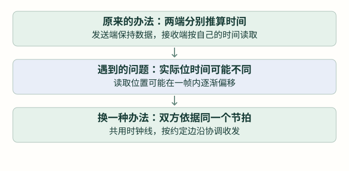
能不能让双方按同一个节拍收发？
既然两端各自计时可能出现偏差，就让双方在通信时依据同一根时钟线来安排动作：什么时候准备当前位，什么时候读取，什么时候进入下一位，都按照约定的时钟边沿进行。这样，发送与接收就有了共同的节拍。
例如双方约定在上升沿读取：发送端要先把当前位放好，接收端在上升沿读取，再配合下一个周期继续。这个读取动作叫采样。连续两个 1 可以一直保持数据线为高，双方依照两个周期，就能把它们当成两个位处理。
SPI 的全称是 Serial Peripheral Interface，串行外设接口。它采用同步通信：双方依据共同的时钟节拍协调收发，不再只靠各自推算每个位的时间。（实际线路有传播延迟，数据仍须在采样前后保持足够稳定，速度也要满足器件要求。）
共用一根时钟线，用谁的时钟？
双方有了共同的节拍，还要确定由谁负责产生它。在本章的一次 SPI 通信中，选定一方驱动时钟线，双方再依据这根线协调收发。负责产生时钟的一方叫主机，配合这个时钟工作的一方叫从机；不能让两端同时随意驱动这根线。
| 角色 | 负责什么 | 不代表什么 |
|---|---|---|
| 主机 Master | 产生 SCK，并安排这次传输 | 不代表只能发送 |
| 从机 Slave | 跟随收到的 SCK 收发数据 | 不代表只能接收 |
时钟线常写作 SCK 或 SCLK。先记住：主机和从机的区分看谁掌握时钟，而不是谁提供业务数据。传感器虽然会把测量结果送出来，仍然可以是从机，由单片机提供读取它所需的时钟。
有了主从，数据线怎样命名？
从主机往从机送数据的线叫 MOSI：Master Out、Slave In，主机输出、从机输入。反方向叫 MISO：Master In、Slave Out，主机输入、从机输出。名称从主机角色出发，不是两边都把 MOSI 接自己的输入。
| 线 | 主机端 | 从机端 |
|---|---|---|
| SCK | 输出时钟 | 接收时钟 |
| MOSI | 输出数据 | 接收主机数据 |
| MISO | 接收从机数据 | 输出数据 |
| GND | 按电路要求连接参考地 | 与主机信号建立共同电压参考 |
暂时先画这些线，不急着写代码。与 UART 的 TX 接 RX 不同，SPI 两端的 MOSI 通常接 MOSI、MISO 接 MISO，因为名字已经同时包含了两端的方向。实际模块也可能使用 SDI、SDO 等标记，必须按它的输入、输出含义核对。
一个主机连接多个从机，怎样选中其中一个？
多个从机可以共用主机产生的 SCK，MOSI 也可以共用。这样一个单片机就能连接多个 SPI 设备。但新问题来了：两颗设备都看到时钟和数据，这个字节到底是发给谁的？
用单独的一根线选中设备
为每颗从机分别连接一根选择线，常叫 CS（Chip Select，片选），也可能标成 SS 或 NSS。本章使用常见的低有效约定：拉低某设备的 CS，选中它；保持高，则不选中它。有效电平最终以器件手册为准。
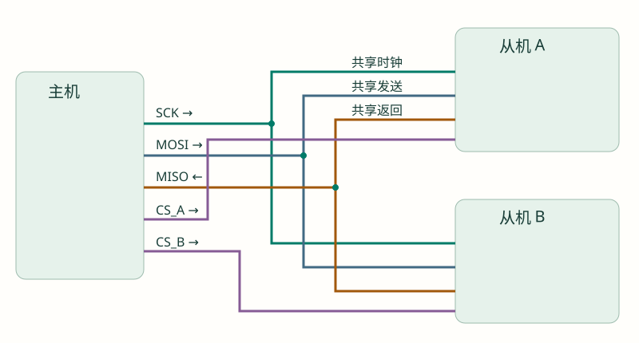
选中 A 时，A 按时钟收发；B 不参与这次事务。多个从机共用 MISO 时，未选中的设备通常必须释放输出，使它不主动拉高或拉低，这叫高阻态；否则两颗器件同时驱动这根线，可能互相冲突。选模块时要确认它确实支持这种共享连接。
CS 还可能标记一次操作的边界
一些从机在 CS 有效后等待命令，接着接收地址、参数或数据，最后在 CS 释放时结束本次操作。这一整段叫一次事务。事务可能包含多个字节，不能默认“发完一个字节就必须拉高 CS”。应该按照器件要求决定选中多久、何时切换。
本章先讲常见的独立片选连接；特殊串接方式不在这次实验范围内。多设备共享时还要分别满足它们的模式、速度和片选时序要求，而不是仅多接一根 CS 就自动兼容。
第 2 节 · 跟着时钟，传完一个字节
先固定一个例子：SCK 空闲为低，在上升沿采样，最高位先发送。模式名称稍后才介绍；现在只跟着动作走。
发送 0xA6，要依次放出哪些位？
0xA6 等于二进制 10100110。最高位记作 D7，最低位记作 D0。这里依次发送 D7 到 D0，也就是 1、0、1、0、0、1、1、0。UART 章的例子低位先发，不能把那里的位顺序直接搬过来。
- 先让 SCK 保持低，把 CS 拉低。
- 在 MOSI 放好 D7＝1，并留出稳定时间。
- 主机让 SCK 从低变高，从机在这个上升沿读取 MOSI。
- SCK 回到低，准备下一位 D6＝0，再留出稳定时间。
- 重复到 D0，八个上升采样沿就传完八位；按本次事务要求结束或继续。
接收端每收到一位，就把它放到相应位置；八位收齐后得到字节 0xA6。所谓“移位”，可以先理解为把已收部分向前挪一位，再放入新的一位，并不是让一整个数字瞬间出现在数据线上。
为什么同样八个时钟，能一边发、一边收？
MOSI 和 MISO 是两根不同的数据线。主机准备一位发送数据，从机也可以准备一位返回数据；在约定的采样边沿，从机读取 MOSI，主机读取 MISO。同样八个周期，两边各收到八位，这就是本例的全双工。
从机返回的内容由它自己的协议和状态决定，并不保证是刚收到字节的回显。比如这八个时钟可能用于接收命令，真正需要的测量数据要在后面的时钟中才能取到。
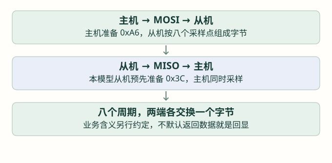
第 3 节 · 约定收发时序，再把约定填进 CubeMX
上一节传送一个字节时，我们采用的是这个顺序：先把数据放到 MOSI 上，时钟上升时让从机读取，再准备下一位。现在顺着这个过程看清两个问题，就能理解四种模式，不需要先背表格。
先放好数据，再让对方读
还是看 0xA6 的前两位：D7＝1、D6＝0。按上一节的约定，主机和从机这样配合：
- 时钟还低着：主机先把 MOSI 设为高，表示 D7＝1。
- 时钟第一次上升：从机读取 MOSI，记下一位 1。这个“读取并记下”的动作就是采样。
- 时钟下降：主机在这一侧准备下一位，把 MOSI 改为低，表示 D6＝0。
- 时钟再次上升：从机读取已经准备好的低电平，记下一位 0。
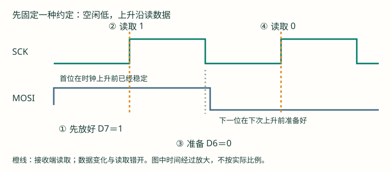
这样安排，是给数据留出稳定时间。如果接收端正准备读取，发送端却也在这附近改变电平，读到的可能是旧值，也可能是新值。双方需要事先约定：在哪个边沿读取，在哪个边沿附近准备下一位。
先看时钟：它也可以从高电平开始
前面一直让 SCK 不传数据时保持低。有些器件要求时钟空闲时保持高，主机就要配合它。于是一个周期的变化顺序也变了：
- 空闲低：先上升，再下降，回到低。
- 空闲高：先下降，再上升，回到高。
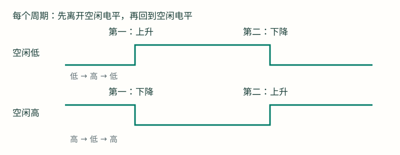
所以，第一个边沿不一定是上升沿。它是时钟离开空闲电平的那次变化；第二个边沿则让时钟回到空闲电平。先分清这一点，后面就不会把采样方向记反。
给第一个设置取名：CPOL，时钟空闲电平
我们已经知道有“空闲低”和“空闲高”两种要求。SPI 把这个设置叫时钟极性 CPOL：
- CPOL＝0：空闲低，每个周期先上升、再下降。
- CPOL＝1：空闲高，每个周期先下降、再上升。
CPOL 只决定时钟从哪个电平开始，尚未决定接收端在哪次变化读取。
第二个设置：CPHA，在哪一个边沿读取？
知道一个周期有两个边沿后，双方再约定使用哪一个来采样。这个设置叫时钟相位 CPHA：
- CPHA＝0：第一个边沿就读取。因此首位数据必须提前准备好；第二个边沿附近再准备下一位。
- CPHA＝1：第一个边沿先推出当前位，第二个边沿才读取；之后每个周期都按这个次序继续。
先保持空闲低，只改变这一项，就能看出区别：CPHA＝0 时上升沿读；CPHA＝1 时上升侧先准备、下降沿再读。再换成空闲高，第一、第二边沿的方向又会反过来。判断采样方向时，先看 CPOL，再看 CPHA。
两种空闲电平，乘以两种读取时刻，就是四种模式
四种模式只是给四种组合编号，不是四套不同的数据内容。仍然发送同一个 A6，但主机必须使用从机要求的组合，让对方在正确时刻读取。
| 模式编号 | CPOL：空闲电平 | CPHA：采样次序 | 所以实际在哪个边沿读？ |
|---|---|---|---|
| Mode 0 | 0：低 | 0：第一边沿 | 上升沿 |
| Mode 1 | 0：低 | 1：第二边沿 | 下降沿 |
| Mode 2 | 1：高 | 0：第一边沿 | 下降沿 |
| Mode 3 | 1：高 | 1：第二边沿 | 上升沿 |
比如器件手册要求“时钟空闲高，在第二边沿采样”：先得到 CPOL＝1，再得到 CPHA＝1，合起来就是 Mode 3。模式由器件要求决定；选项都能点选，不代表从机都支持。
再用慢动作，把刚才的推理走一遍
- 先看 Mode 0：初始 SCK 是低，点击一次“下一个时钟边沿”。第一个上升沿读取 D7。下一次下降不增加已采样位数，再一次上升才读取 D6。
- 换成 Mode 2，只改变空闲电平：仍然在第一边沿读，但第一边沿已经变成下降沿。比较两次初始 SCK 和第一个读取动作。
- 回到 Mode 0，再换 Mode 1，只改变采样次序：SCK 仍空闲低；第一次上升先准备数据，第二次下降才把已采样位数加一。最后再自行判断 Mode 3。
扩展：数据要提前稳定多久？
接收端要求数据在采样前已经稳定一段时间，采样后也继续保持一段时间，分别称为建立时间和保持时间。具体数值查器件手册。本节先理解“准备和读取要错开”；时钟越快，留给输出变化、线路传递与稳定的时间越短，因此模式一致也不能保证任意速度都能正常通信。
到下一节配置 CubeMX 时，先根据器件要求确定这两个约定，再把它们对应到界面中的 Clock Polarity 和 Clock Phase。此时是在填写已经理解的含义，而不是先照抄一组名字。
现在把时序约定填进 CubeMX
现在才打开 CubeMX 的 Connectivity → SPI1。截图用于认识选项；独立实验采用主机、全双工、8 位、MSB First、Mode 0，并用普通 GPIO 控制一根低有效 CS。手表真实屏幕使用 SPI2，后面单独对照。
Mode：选择谁供时钟，以及数据往哪边走
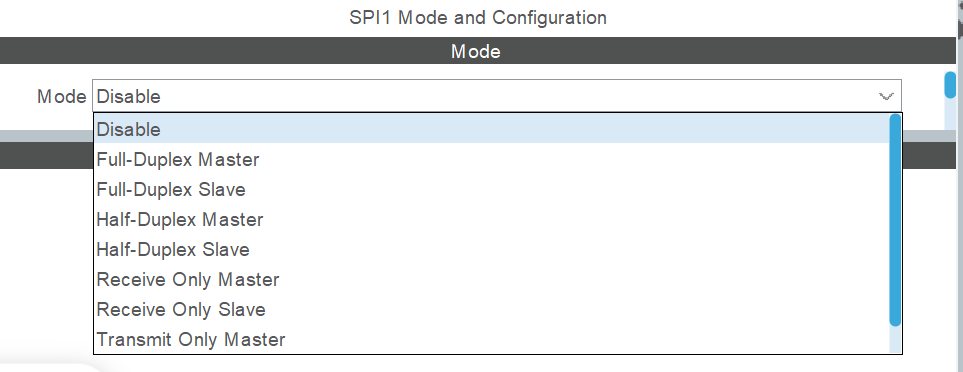
| 选项 | 含义 | 本章怎样用 |
|---|---|---|
| Disable | 不启用这路 SPI | 不选 |
| Full-Duplex Master | 主机提供时钟，两根数据线分别收发 | 本章选择，用于理解双向收发；OLED 实验只连接发送方向 |
| Full-Duplex Slave | 作为从机，跟随外部时钟 | 不是本次主机实验 |
| Half-Duplex Master / Slave | 一根双向数据线分时发送或接收 | 先认识名称，不与全双工混接 |
| Receive Only / Transmit Only | 只接收或只发送的配置 | 具体时钟与引脚行为依器件和配置，不把只接收理解为无需时钟 |
参数截图中，哪些值需要调整？
下图展示参数所在位置。图里的 Data Size 是 4 Bits，Prescaler 是 2，界面算出的速率是 80.0 MBit/s；它们不是本章基础实验要照抄的配置。先看表格中的“本章选择”，完成调整后再核对界面。
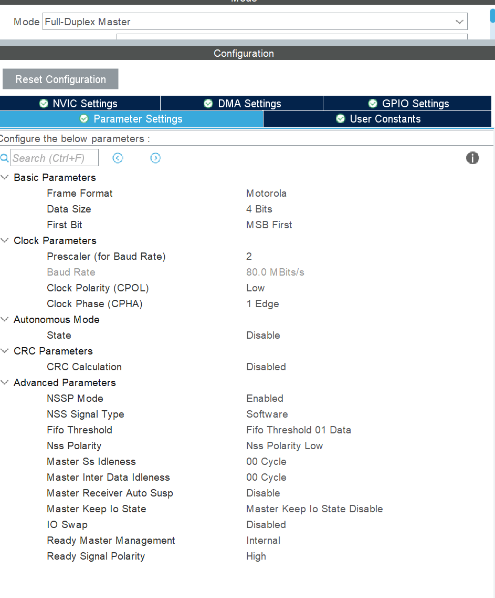
| 界面字段 | 本章选择 | 为什么 |
|---|---|---|
| Frame Format | Motorola | 本章的普通 SPI 时序；暂不使用 TI 帧格式 |
| Data Size | 8 Bits | 一个数据单元就是八位，才能对应本章的一字节例子 |
| First Bit | MSB First | 先传 D7，再到 D0 |
| Clock Polarity (CPOL) | Low | SCK 空闲低，即 CPOL＝0 |
| Clock Phase (CPHA) | 1 Edge | 第一个边沿采样，即 CPHA＝0，不是 Mode 1 |
| Prescaler (for Baud Rate) | 先选较大分频，例如 256；核对实际 SCK | 让初次观察更慢；仍要满足从机允许的时钟范围 |
| NSS Signal Type | Software | 本章外部 CS 用普通 GPIO 手动控制 |
| CRC Calculation / Autonomous Mode | Disabled / Disable | 第一轮先观察固定字节，不增加自动 CRC 或自主触发 |
SPI 时钟通常由该外设的输入时钟分频得到。例如本截图按 160 MHz 的内核时钟计算，除以 2 是 80 MHz，除以 256 则是 625 kHz。这只是本例算式，不代表所有 SPI1 都用 160 MHz。先在界面核对实际显示的频率，时钟树章节再追踪来源。
这里的 Software NSS 不会替程序自动拉低外部 CS。截图中的 NSSP Mode、NSS Polarity 主要与外设 NSS 管理有关，不能拿它们代替 GPIO 片选操作。本章不使用硬件 NSS 输出脉冲；FIFO 阈值先用一数据项，IO Swap 关闭，其他高级间隔与就绪选项先按目标芯片基础配置核对，等需要时展开。
GPIO 与 NVIC：轮询、中断、DMA 的准备不同
在引脚图中确认 SPI1_SCK、SPI1_MOSI、SPI1_MISO 是所选芯片支持的引脚，并按 SPI 功能使用复用模式。本章代码另外约定 PB0 为 CS：普通推挽输出、初始高电平；它与其他章节的按钮接法是不同独立实验，不能同时接成按钮和片选。
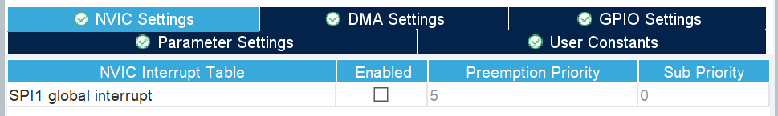
轮询函数自己检查硬件状态，本章第一轮不依赖 SPI1 global interrupt。到了中断实验，才勾选并配置入口；优先级 5 只是图中取值，不是所有工程都必须用的数字。DMA 的 DMA 通道及 SPI 中断准备在DMA 发送部分列出。
第 4 节 · 用 HAL 传输数据：从轮询到中断、DMA
下面围绕同一组发送数据逐步改变执行方式：先在函数里等发送结束，再让主循环继续执行，最后把重复搬运交给 DMA。引脚、字节含义与片选要求仍然沿用前面的知识。
先用轮询，完整走通一次发送
先认识管理对象和函数声明
SPI_HandleTypeDef 是 HAL 定义的 SPI 管理结构体类型。基础工程里的 hspi1 保存 SPI1 的配置和运行状态；&hspi1 把现有对象地址交给函数，不再自己定义一个同名对象。应用包含本工程的 spi.h，代码放在 SPI1 与 CS 初始化之后。
HAL_SPI_Transmit 从指定存储区取数据并发送；这是阻塞式调用，等正常完成、超时或出错后才返回。先看声明，不需要复制实现：
接口阅读 · 声明来自本工程 STM32U5 HAL1 头文件
HAL_StatusTypeDef HAL_SPI_Transmit(
SPI_HandleTypeDef *hspi,
const uint8_t *pData,
uint16_t Size,
uint32_t Timeout);| 位置 | 本例 | 含义 |
|---|---|---|
| 1 · hspi | &hspi1 | 选择已初始化的 SPI1 管理对象 |
| 2 · pData | &tx | 从变量 tx 的地址读取发送数据；const 表示通过此指针只读 |
| 3 · Size | 1 | 传一个数据单元。本章 Data Size＝8 Bits，所以就是一个字节 |
| 4 · Timeout | 100 | 超时参数为 100 ms，不设置 SCK 频率，也不是传完后的固定延时 |
uint8_t 是无符号八位整数；uint16_t、uint32_t 分别是无符号 16、32 位整数。HAL_StatusTypeDef 是状态枚举：HAL_OK 表示本次本端正常完成，HAL_BUSY 表示操作忙，HAL_TIMEOUT 表示等待超时，HAL_ERROR 表示错误。status 是应用自己取的变量名，用于保存状态，不是收到的字节。
主动控制 CS，再发送一个字节
复用 GPIO 章的 HAL_GPIO_WritePin：三个参数依次是引脚组、引脚掩码和输出状态，没有返回值。GPIOB 选择 B 组，GPIO_PIN_0 选择 0 号引脚；RESET 输出低，SET 输出高。本例片选低有效，所以先 RESET 选中，再调用 SPI，结束后 SET 释放。
独立实验第一步 · 放在 main 初始化之后，执行一次；之后保留原主循环
uint8_t tx = 0xA6;
HAL_GPIO_WritePin(GPIOB, GPIO_PIN_0, GPIO_PIN_RESET);
HAL_StatusTypeDef status = HAL_SPI_Transmit(&hspi1, &tx, 1, 100);
HAL_GPIO_WritePin(GPIOB, GPIO_PIN_0, GPIO_PIN_SET);
if (status != HAL_OK) {
/* 在调试器观察 status，不把这次操作当作成功。 */
}用逻辑分析仪接到已确认的 SCK、MOSI、CS 和 GND，按实际电平与信号频率选择采样条件。应看到 CS 有效期间八个周期、MOSI 依次为 10100110。SPI 外设会生成时钟，不需要在 C 中手动每一位拉高拉低。
本端 HAL_OK 不证明从机接受了命令；即使从机没有连接，发送侧也可能把波形输出完。普通 SPI 没有统一的逐字节应答位，是否成功要通过从机状态、返回数据或实际现象确认。
接收函数与同时收发函数有什么不同？
先阅读接口 · 同时收发接口作为后续读取 SPI 器件的准备
HAL_StatusTypeDef HAL_SPI_Receive(
SPI_HandleTypeDef *hspi, uint8_t *pData,
uint16_t Size, uint32_t Timeout);
HAL_StatusTypeDef HAL_SPI_TransmitReceive(
SPI_HandleTypeDef *hspi, const uint8_t *pTxData,
uint8_t *pRxData, uint16_t Size, uint32_t Timeout);HAL_SPI_Receive 将收到的数据写入 pData 指向的存储区；本工程 U5 驱动会按当前接收配置启动硬件传输，不能把它理解成只读一个内存变量。不同 STM32 SPI 版本接收时的时钟处理不同；如果读取其他 SPI 器件时需要明确发出命令或占位内容，可以使用同时收发函数；本节 OLED 实践只需发送。
HAL_SPI_TransmitReceive 一次同时发送和接收。参数依次为：管理对象地址、发送区地址、接收区地址、单元数量、超时毫秒数；返回值仍是操作状态。发送区与接收区本例使用两个不同变量；接收区才放返回数据。
不想一直等在函数里：改用中断方式
轮询发送期间，SPI 硬件在移位，CPU 也在函数里反复检查状态。发送内容变多时，希望主循环继续做别的事，可以让 SPI 在需要处理或完成时产生中断。
先看与轮询版本不同的地方
中断发送接口 · IT 表示 interrupt
HAL_StatusTypeDef HAL_SPI_Transmit_IT(
SPI_HandleTypeDef *hspi, const uint8_t *pData, uint16_t Size);三个参数依次是管理对象地址、发送区地址和单元数量；它没有轮询版的 Timeout 参数。返回 HAL_OK 表示这笔中断传输已启动，不代表线上已经发完。后面真正完成时，HAL 会调用完成回调；启动失败时则不能等待一个必定会到来的完成通知。
接收版 HAL_SPI_Receive_IT 的三个参数是对象、接收区、数量；同时收发版 HAL_SPI_TransmitReceive_IT 的四个参数是对象、发送区、接收区、数量。它们同样返回启动状态；本节先只做发送，避免一下引入两套缓冲区。
从 NVIC 到 HAL 的入口要接好
启用 SPI1 global interrupt，并按中断章的方法设置合适优先级。SPI1_IRQHandler 是本路中断入口，没有参数和返回值；入口调用 HAL_SPI_IRQHandler，其参数是 SPI 管理对象地址，也没有返回值。它负责检查 SPI 来源、搬运所需数据和完成相应处理。
入口对照 · 通常在 stm32u5xx_it.c；已有入口时只核对，不重复定义
void SPI1_IRQHandler(void)
{
HAL_SPI_IRQHandler(&hspi1);
}完成通知先介绍，再使用
HAL_SPI_TxCpltCallback(SPI_HandleTypeDef *hspi) 是发送完成回调；没有返回值，参数指向完成传输的 SPI 对象。接收完成叫 HAL_SPI_RxCpltCallback，同时收发完成叫 HAL_SPI_TxRxCpltCallback，参数与返回类型相同。HAL_SPI_ErrorCallback 用于错误通知。
本仓库关闭 SPI 动态回调注册，HAL 默认回调带 __weak。应用提供同名、同签名的普通全局实现即可替代，不加 __weak，也不声明 static。回调仍在中断路径中，不在里面长时间等待或调用 HAL_Delay。
下面用 static 数组保持发送区长期有效。tx_done 和 tx_fault 是中断写、主循环读的状态标志，使用 volatile 保证按要求访问；它不是锁。先只启动一笔传输，不在等待完成时重复提交。
中断发送第一部分 · 应用回调仅保留一份，实现位于 main 外部
/* 放在应用 C 文件的文件作用域。 */
static uint8_t tx_data[] = {0xA6, 0x3C, 0x55};
static volatile uint8_t tx_done = 0;
static volatile uint8_t tx_fault = 0;
void HAL_SPI_TxCpltCallback(SPI_HandleTypeDef *hspi)
{
if (hspi == &hspi1) {
tx_done = 1;
}
}
void HAL_SPI_ErrorCallback(SPI_HandleTypeDef *hspi)
{
if (hspi == &hspi1) {
tx_fault = 1;
}
}主循环中的 busy 是应用自己的事务标志，不是 HAL 内部状态。启动之前先拉低 CS，成功后让它继续保持低；收到完成标志才在主循环拉高。把 CS 紧跟在启动函数后拉高，会在数据还没发送完时提前结束事务。
中断发送第二部分 · 与上面的数组和回调配套，替换轮询实验
/* main 中：基础初始化完成后；本例独占 SPI1。 */
uint8_t busy = 1;
HAL_GPIO_WritePin(GPIOB, GPIO_PIN_0, GPIO_PIN_RESET);
HAL_StatusTypeDef start_status = HAL_SPI_Transmit_IT(
&hspi1, tx_data, sizeof(tx_data));
if (start_status != HAL_OK) {
tx_fault = 1;
}
while (1) {
if (busy != 0 && tx_fault == 0 && tx_done != 0) {
HAL_GPIO_WritePin(GPIOB, GPIO_PIN_0, GPIO_PIN_SET);
busy = 0;
/* 现在才允许按下一笔事务的规则改写 tx_data。 */
}
if (tx_fault != 0) {
/* 停止提交新传输；在调试器观察 start_status 与 SPI 状态。 */
}
/* 继续其他普通工作；本例不自动重复发送。 */
}正常情况下应看到 CS 持续有效、24 个时钟周期，完成后 tx_done 变成 1，主循环释放 CS。若启动失败或发生错误，本例停在可观察的故障状态，不声称已完成错误恢复。确认硬件已停止、整理片选和驱动状态之后，才能重新提交；不能只清掉错误标志就假装恢复。
搬运工作多了：再请 DMA 小助手
中断方式让主循环不再一直等，但 CPU 仍会在中断处理中帮助 SPI 搬数据。要发送很多字节时，能不能找一个硬件助手接手这部分重复工作？
DMA 就是这样的“小助手”。以发送为例，CPU 先告诉它：数据在内存哪里、要送到哪个外设、搬多少。随后 DMA 按外设请求，把数据搬给 SPI，SPI 再按 SCK 把位送到引脚；接收时则把外设数据搬进内存。DMA 不只服务 SPI，也能服务其他适配的外设。
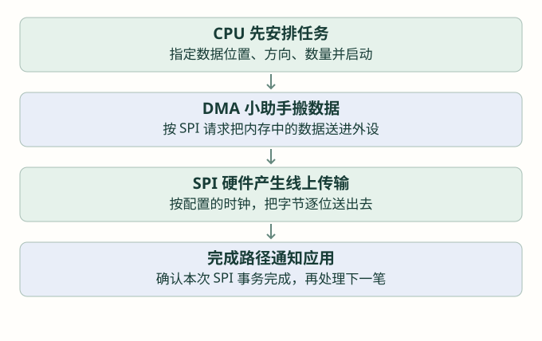
| 方式 | 谁推进数据搬运 | 主循环怎样知道结束 |
|---|---|---|
| 轮询 | CPU 在调用内部配合硬件推进 | 检查函数返回状态 |
| 中断 | CPU 在中断处理期间配合硬件推进 | HAL 完成回调通知 |
| DMA | DMA 按请求搬运，CPU 负责配置与完成、错误处理 | 经 DMA / SPI 完成路径到 HAL 回调 |
先配置一笔普通 DMA 发送需要的条件
在独立 SPI1 的 DMA Settings 中，为发送添加对应 SPI1_TX 请求。界面与可选 DMA 控制器随芯片不同，本节不把某个通道号当成通用答案。先按这些含义核对：
| 设置 | 本次普通发送要求 | 它告诉助手什么 |
|---|---|---|
| Request | SPI1_TX 对应的发送请求 | 由哪个外设请求搬运，不选成接收请求 |
| Direction | Memory to Peripheral | 从内存送到外设 |
| Memory increment | 启用 | 下一次取数组的下一项 |
| Peripheral increment | 关闭 | 外设数据位置不随每个字节增加 |
| Data width | 源与目的按 8 位数据配置 | 与本章 SPI 8 Bits 对齐 |
| Mode / 数量 | 一次有限传输，非循环 | 搬完规定数量，不自动反复使用数组 |
| 关联与初始化 | DMA 已初始化并与 hspi1 的发送路径关联 | 不是只添加了一个界面条目 |
在 STM32U5 中，GPDMA 还可能涉及节点和链表配置；先把它理解为描述搬运任务的配置。如果当前工程使用该界面，必须确认它是一笔有效、有限的任务并完成对象关联。这里先使用已经准备好的独立基础工程；节点结构与请求机制到 DMA 章再逐步拆开，不临时拼一段未说明的底层初始化。
DMA 通道中断与 SPI 中断都要核对
DMA 通道需要由它自己的中断入口交给 HAL_DMA_IRQHandler。这个函数接收对应 DMA 管理对象的地址，没有返回值，用于处理该通道状态；具体通道入口名和对象由基础工程的实际分配决定，不能把别人的通道号直接照抄。
本工程 STM32U5 HAL1 的普通非循环 SPI DMA 发送，还需要 SPI 中断完成收尾。驱动在 DMA 搬完后允许 SPI 的传输结束事件 EOT，再经 SPI 中断完成处理、调用应用回调。因此要同时核对 DMA 通道中断和中断发送部分的 SPI1 global interrupt、SPI1_IRQHandler。只开 DMA 中断而不接 SPI 入口，可能收不到预期完成回调。
这也说明：DMA 把数据送给外设，与最后一位已经从引脚发完，是两个时刻。不要在 DMA 刚搬完内存数据时就自行释放 CS。这里依据本章 U5 普通非循环驱动路径说明，其他系列或循环模式要重新核对。
使用方法：换启动函数，保留完成规则
先认识 DMA 发送接口，再修改中断发送部分示例
HAL_StatusTypeDef HAL_SPI_Transmit_DMA(
SPI_HandleTypeDef *hspi, const uint8_t *pData, uint16_t Size);它的三个参数依次是 SPI 对象地址、发送数据地址、单元数量；返回 HAL_StatusTypeDef，HAL_OK 只表示启动成功。仍没有轮询 Timeout 参数。接收版 HAL_SPI_Receive_DMA 使用对象、接收区、数量；同时收发版 HAL_SPI_TransmitReceive_DMA 使用对象、发送区、接收区、数量，需要相应收发 DMA 配置。
完成上述初始化和中断准备后，保留中断发送部分长期有效的 tx_data、tx_done、tx_fault、两个回调和主循环，只把启动语句替换为下面这一句。不要先启动 IT 再紧接着启动 DMA；它们是两次独立实验。
替换中断发送部分 start_status 的声明与启动语句，其余正常完成处理不变
HAL_StatusTypeDef start_status = HAL_SPI_Transmit_DMA(
&hspi1, tx_data, sizeof(tx_data));普通发送完成后仍到 HAL_SPI_TxCpltCallback，应用收到 tx_done 再释放 CS；错误路径仍要停止新提交并处理，不能自动假定 DMA 已停。先对照三字节的波形和完成标志，再用更长、内容已知的数组比较 CPU 能否在主循环继续工作。
到 DMA 专章，再解释请求、通道、节点、总线争用和缓冲管理。GPIO 手动实现 SPI 也放在学过定时器后的回访实验，本章不使用来历不明的延时函数或空循环冒充准确时序。
第 5 节 · 用 SPI 点亮 OLED，再显示取模图片
固定字节实验之后，用真正看得见的画面检验 SPI。这里选用SSD1306、128×64、已配置为四线 SPI 的单色 OLED 模块。本节只做轮询显示，先清屏、画一个点，再显示取模图片；不先引入完整 UI 库。
参考 波特律动的 OLED 绘图与取模讲解认识“先画缓冲区，再刷新”的使用流程。该例程的板载屏是 I²C 接口，控制器也与本例不同；本节另提供 SPI 教学代码，不把它的接线和初始化直接照搬过来。
使用 Solomon Systech · SSD1306 Rev 1.1（2008-04），由 Adafruit 托管厂商原文。下面链接按 PDF 阅读器页码跳转；主手册为 59 页，文件后附 6 页电荷泵应用说明。无需先通读全文，每遇到一个配置就按表查找。
| 本节要解决什么 | 打开手册哪里 | 回到代码找什么 |
|---|---|---|
| 确认四线 SPI 与 D/C | §8.1.3，p.17～18；Figure 8-5 在 p.18 | write_bytes：is_data 控制 D/C，PB0 控制 CS |
| 理解页与字节排列 | §8.7，p.25；GDDRAM 示意 | frame[8][128]；Pixel 的 y/8 与 y%8 |
| 设置页寻址与起点 | §10.1.1～10.1.3，p.34；§10.1.13，p.37 | Init 的 20 02；Flush 的 B0|page、00、10 |
| 确认初始化含义 | §9 命令表，p.28 起；§10.1.12，p.37 | setup 数组按命令及参数分组；AE/AF 控制显示 |
| 核对电荷泵设置 | 附录应用说明 §2.1（PDF p.62） | 8D 14；只适用于与本例供屏方案相符的模块 |
这份文件描述的是控制器芯片。实验尚未指定具体品牌的 OLED 模组，供电范围、接口焊盘和排针顺序仍需该模组的说明或原理图；不能将芯片引脚图直接当成模块排针图。
先确认手里的屏，接的是什么接口
OLED 是显示技术名称，不是一套统一通信协议。有些模块只引出电源、SCL、SDA 四个引脚，已经固定为 I²C；另一些模块引出 CS、D/C、RES 等，可以使用 SPI。即使外形、分辨率相同，也不能默认控制器和初始化相同。
本例假设使用供电和逻辑输入均支持本实验 3.3 V 的成品模块，内部电荷泵供屏使用，接口选择已经设为四线 SPI。电荷泵可以先理解为模块中为 OLED 工作准备显示电压的部分。若实际型号是 SH1106、CH1116、SSD1309 或 128×32 面板，先换成匹配的驱动和初始化，不能只改一个宽度数字。
| OLED 模块常见标记 | 接到独立实验板哪里 | 作用 |
|---|---|---|
| GND | 实验板 GND | 信号参考地 |
| VCC | 模块说明允许的电源；本例 3.3 V | 先确认成品模块额定供电 |
| D0 / CLK / SCK | 所选 SPI1_SCK 引脚 | 主机输出时钟 |
| D1 / DIN / MOSI | 所选 SPI1_MOSI 引脚 | 主机向 OLED 发送数据 |
| CS | PB0，推挽输出，初始高 | 低电平选中 OLED |
| DC / D/C | PB1，推挽输出，初始高 | 低表示命令，高表示显示数据 |
| RES / RST | PB2，推挽输出，初始高 | 低电平复位控制器 |
SPI1 延续前面 8 Bits、MSB First、Mode 0、软件 NSS 的设置，先用不高于 1 MHz 的 SCK，并核对模组要求。SSD1306 的 SPI 模式是写入路径，这个显示实验不连接 OLED 返回的 MISO。屏幕丝印有时也把 SPI 数据线写作 SDA，要结合接口选择和说明判断，不能只凭这三个字母认定是 I²C。
CS、D/C 和 RESET 为什么都需要？
CS 解决“这次选谁”。D/C 解决“这个字节该当成什么”：D/C 低时，控制器按命令及其参数解释字节；D/C 高时，把字节写到显示数据存储区。RESET 则让控制器回到确定的起点。设置引脚模式、复位、初始化，都要先于正式画图。
例如 0xAE 是关闭显示输出，0xAF 是打开显示输出；开显示不等于已经填好所有像素。初始化还要设置行数、寻址方式和供屏参数。本例的完整命令在教学驱动中逐项加了注释，第一轮先认清每组命令解决哪类配置，不要求背十六进制表。命令含义按 SSD1306 手册核对。
128×64 个黑白点，为什么只需 1024 字节？
单色屏每个像素用一个位表示亮或灭。128×64＝8192 个像素；每字节八位，所以一整屏是 8192÷8＝1024 字节。
本例把纵向相邻的八行看作一页：y＝0～7 是第 0 页，y＝8～15 是第 1 页，依次到第 7 页。每一页有 128 列，每列一个字节。字节的 bit 0 对应这组八行最上面的像素，bit 7 对应最下面的像素；先逐列向右放，再放下一页。
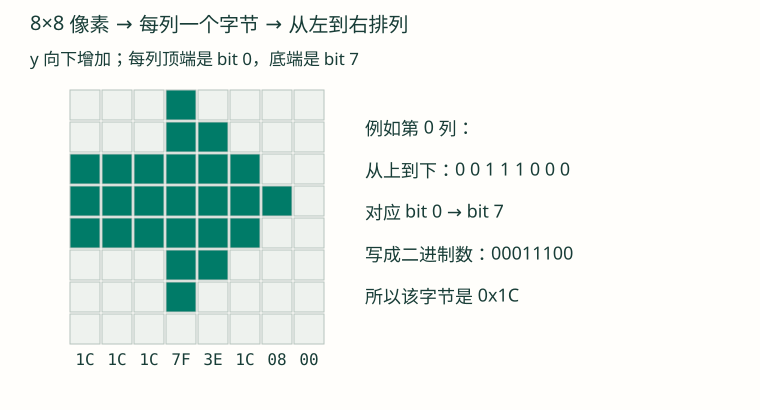
例如点亮 (x＝10，y＝9)：第 1 页、第 10 列的字节中，设置 bit 1。对应数组 frame[1][10]，在 1024 字节连续排列中是下标 138。图案要出现在哪里，由这些像素位置决定，不由 C 数组的变量名决定。
先亲手发一条命令，再看看哪些代码总在重复
刚才已经知道 D/C 低表示命令。现在只发送 AE（关闭显示）：先把 D/C 拉低，再把 CS 拉低，调用已经学过的 SPI 发送，最后释放 CS。这个片段用于看发送动作；屏幕完整初始化之前，不要求它出现图案。
对照教学驱动内部发送过程 · SPI1 与三个控制引脚已经初始化
uint8_t command = 0xAE;
HAL_GPIO_WritePin(GPIOB, GPIO_PIN_1, GPIO_PIN_RESET); /* D/C：命令 */
HAL_GPIO_WritePin(GPIOB, GPIO_PIN_0, GPIO_PIN_RESET); /* CS：选中 */
HAL_StatusTypeDef status = HAL_SPI_Transmit(&hspi1, &command, 1, 100);
HAL_GPIO_WritePin(GPIOB, GPIO_PIN_0, GPIO_PIN_SET); /* CS：释放 */如果要发送 AF 或其他命令，变的是 command，周围的控制线和发送动作一样；若发送像素，D/C 改为高，其他过程仍相似。每条命令都重复这些语句会遮住命令本身，于是把这段重复操作放进 write_bytes：第一个参数说明命令还是显示数据，第二个给字节地址，第三个给字节数，返回 HAL 的发送状态。
已有 oled_lesson.c 的发送封装 · 先对应刚才展开的 GPIO 与 HAL 调用
static HAL_StatusTypeDef write_bytes(uint8_t is_data,
const uint8_t *data, uint16_t size)
{
if (data == 0 || size == 0) {
return HAL_ERROR;
}
HAL_GPIO_WritePin(GPIOB, GPIO_PIN_1,
is_data ? GPIO_PIN_SET : GPIO_PIN_RESET);
HAL_GPIO_WritePin(GPIOB, GPIO_PIN_0, GPIO_PIN_RESET);
HAL_StatusTypeDef status = HAL_SPI_Transmit(&hspi1, data, size, 100);
HAL_GPIO_WritePin(GPIOB, GPIO_PIN_0, GPIO_PIN_SET);
return status;
}再回到前面的 frame 数组：把所有字节清零，就是清空画布；根据 x、y 改其中一个位，就是画点；把八页数组依次发出去，就是刷新。因此 Clear、Pixel、Flush 分别只是给这三个具体动作起名字，并没有换一种通信方式。Init 则把复位、设置参数、清屏和打开显示按顺序组合；Bitmap 把取模数组逐点写到同一块画布。
理解这些动作后，再使用下面五个函数。使用它们时可以随时回到源文件，找到刚才已经认识的 GPIO、SPI、数组与位运算。
先认识教学驱动的五个函数
本节提供 oled_lesson.h 和 oled_lesson.c。这是本教程为独立 SPI 实验写的封装，不是 HAL 自带函数，也不是波特律动库的同名替代品。把它们分别加入独立实验工程的头文件、源文件目录并参与构建，应用中包含 oled_lesson.h；需要的 spi.h、hspi1 由基础工程提供。
| 函数 | 参数、返回值 | 具体做什么 |
|---|---|---|
| OLED_LessonInit() | 无参数；返回 HAL_StatusTypeDef | 复位，发送本例初始化，清空并刷新，然后打开显示 |
| OLED_LessonClear() | 无参数，无返回值 | 只把单片机内存画布清零，尚未刷新屏幕 |
| OLED_LessonPixel(x, y, on) | 横坐标、纵坐标、是否点亮；无返回值 | x 为 0～127，y 为 0～63，on＝1 点亮、0 熄灭；越界忽略 |
| OLED_LessonFlush() | 无参数；返回 HAL_StatusTypeDef | 逐页设置位置，把 1024 字节画布通过 SPI 发给屏幕 |
| OLED_LessonBitmap(x, y, width, height, data, size) | 左上角、宽高、数据地址与字节数；返回 HAL_StatusTypeDef | 按本节约定解码图模到内存画布，不自动刷新；不合格式返回 HAL_ERROR |
这些返回状态沿用前面学过的 HAL 状态。HAL_OK 说明本端调用正常完成，不等于屏幕供电、控制器选择和画面内容全部正确。Pixel 和 Bitmap 改的是 MCU 的 RAM 缓冲区；Flush 才把画面送到控制器。
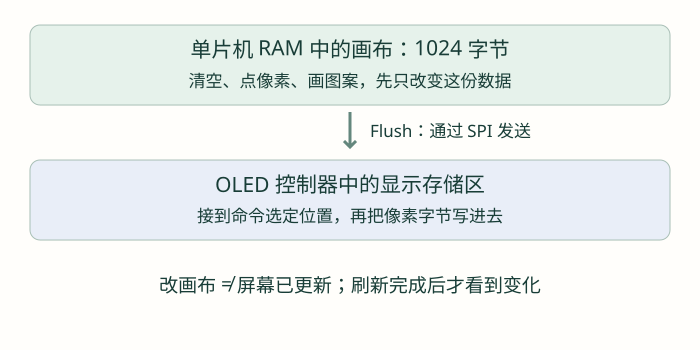
带着手册读一次 Flush：三条命令怎样确定起点？
打开上表的页寻址说明，再看 oled_lesson.c 的 Init 与 Flush。先在 Init 找到 0x20, 0x02：前者选择寻址方式，后者是它的参数。读命令表时先分清“命令”与“紧跟的参数”，不能把数组中每个数都当成独立命令。
接着跟踪循环中的 page＝1：0xB0 | page 得到 B1，选第 1 页；0x00 和 0x10 分别将列起点的低、高四位设为零。然后才以 D/C 高发送这一页的 128 个字节。读完一页并不替本例选好下一页，所以 Flush 的循环再次发命令设置下一页起点。
练习：如果只想从第 1 页、第 10 列开始发送，先把 10 写成十六进制 0A，再分别组装页、低列、高列命令。结果应为 B1 0A 10；随后传输的一个数据字节仍代表这一列的八个像素，而不是八列。可以对照 p.34 的页寻址图检查自己的推导。
第一步：初始化、清屏，再点亮一个像素
先确认 SPI1、PB0/PB1/PB2 已初始化，HAL 的毫秒时基正常。驱动中的等待用已学过的 HAL_Delay，复位等待是本例保守设置，实际供电和复位要求仍以模块说明为准。以下代码放在 main 的基础初始化之后、原主循环之前：
第一步 · 初始化本身会清屏；再画一个点以观察完整流程
HAL_StatusTypeDef oled_status = OLED_LessonInit();
if (oled_status == HAL_OK) {
OLED_LessonClear();
OLED_LessonPixel(10, 9, 1);
oled_status = OLED_LessonFlush();
}
/* 在调试器观察 oled_status，后面继续原来的主循环。 */预期背景熄灭，在靠左上处出现一个小点。点很小，可改成一个 8×8 方块：两个循环让 x 从 0 到 7、y 从 0 到 7，逐点调用 Pixel，最后只调用一次 Flush。先把这一步跑通，再增加图片或汉字。
如果方向镜像或上下颠倒，先核对初始化中的扫描映射及面板安装方向；如果完全不亮，优先查供电、接口选择、复位、CS、D/C 和发送状态，不先怀疑字模。
第二步：推荐波特律动取模助手
推荐使用 波特律动 OLED 取模助手。它提供字体取模和图片取模，可以预览图案并生成 C 数据；这样不必手工为每个像素计算字节。取模就是把文字或图片，按某种像素排列约定转换成数字数组，不会自动替你完成接线和初始化。
- 先用本节原创的 8×8 箭头 BMP，进入工具的“图片取模”功能导入。图案有明确方向，适合检查镜像和位顺序。
- 保持 8×8、单色，不缩放成其他尺寸。让亮像素对应 1、背景对应 0；工具中可看到阴阳码等选项，需要结合预览确认。
- 按本节约定选择或转换排列：纵向八像素组成一个字节，bit 0 在上；先排同一页的各列，再排下一页。工具提供多种取模方式，不能只看名称相似就认定匹配。
- 导出纯像素数据，检查 8×8 应为八个字节，并与下面的数组比较。如果输出带 Image、Font 结构体、UTF-8 编码前缀等，那是另一种库的数据包装，不能整段当作本例 data 传入。
- 数组正确后，先把箭头画到固定坐标并刷新，最后再换自己的图片。

这张箭头按本例排列应得到的八个字节 · 放在文件作用域
static const uint8_t arrow8[] = {
0x1C, 0x1C, 0x1C, 0x7F, 0x3E, 0x1C, 0x08, 0x00
};下面每个参数都能对应到刚才的表：16、16 是图案左上角；8、8 是宽高；arrow8 是像素数组地址；sizeof(arrow8) 在这个实际数组处为八个字节。Bitmap 返回成功后再刷新：
第二步 · 若原作用域已有 oled_status，只赋值，不重复声明
/* 保留前面已成功完成的初始化；替换单点绘制部分。 */
OLED_LessonClear();
HAL_StatusTypeDef oled_status = OLED_LessonBitmap(
16, 16, 8, 8, arrow8, sizeof(arrow8));
if (oled_status == HAL_OK) {
oled_status = OLED_LessonFlush();
}本例 Bitmap 按宽×向上取整(高÷8) 检查数据长度。例如 16×16 需要 32 字节，13×10 需要 26 字节，而不一定是像素总数直接除八；每页不足八行也占一个字节。它按 0、1 覆盖图案矩形中的像素，超出屏幕的目标像素裁掉。
汉字与图片的共同点，以及不能混用的部分
字体取模把一个字变成一小块点阵，图像取模把整张图变成点阵。第一次可先选一个 16×16 字，取得匹配排列的 32 字节像素，像图片一样画出来；显示多个字符时，再按字符编码找到对应点阵、依次移动坐标。
取模助手默认可生成适配波特律动 OLED 驱动的 Font 定义，可能在每个点阵之前包含字符编码。这种导出应搭配相应驱动的字体接口使用；本例只吃纯像素数组，不能把带编码的数据直接交给 Bitmap。字形数据与 I²C、SPI 传输无关，真正决定能否复用的是排列方式和绘图接口。
从这个实验接回中断、DMA 与手表彩屏
本例用轮询发送，是为了先把“命令、数据、画布、刷新”看清楚。驱动内部的页地址数组与部分命令变量是局部数据；不能只把 HAL_SPI_Transmit 改为 DMA 后缀就离开函数，也不能让异步传输尚未完成时继续切 D/C、CS。异步刷新需要把缓冲区、页次序和完成通知一起组织。
手表本身用 GC9A01 彩色 LCD，并非本例 SSD1306 单色 OLED。进入支线一后，沿同样的“配置 → 命令 → 数据”路径阅读，并结合 GC9A01 手册学习 RGB565 和矩形窗口。
接下来：继续主线，或进入屏幕与 UI 支线
如果想继续驱动手表彩屏，可以转到 支线一：GC9A01 屏幕实战，再按 七篇路线学习 LVGL。它从已有的 SPI 知识继续深入，不作为后面主线的前置要求。
主线则继续 I²C：SPI 常见一对多接法需要独立片选，能不能把“找谁”放进共用的数据中？下一篇由此引出设备地址，再区分设备内部的寄存器地址。
检查理解
参考与继续阅读
- 波特律动 · OLED 绘图与取模与在线取模助手：绘图使用流程与工具推荐；原例程是 I²C，不是本节 SPI 驱动。
- Solomon Systech · SSD1306 手册：四线 SPI、显示存储区和命令。
- Adafruit · SSD1306 开源实现：交叉核对 128×64 面板初始化与图像缓冲方法；本节教学驱动独立编写。
- Analog Devices · SPI 接口与时序入门：用于核对信号方向与四种模式。
- ST · AN5543 SPI 使用指南：不同 SPI 硬件版本和完成处理差异，作为进阶查阅。
- ST · STM32U5 HAL1 SPI 源码与本仓库驱动：接口、弱回调以及普通 DMA 完成后的 EOT 收尾路径。
本章的图解、代码实验与页面模型按教学顺序组织；项目事实以本仓库当前实现为准。完整来源见 资料索引。不同系列的时钟、引脚与 DMA 初始化不能直接互换。